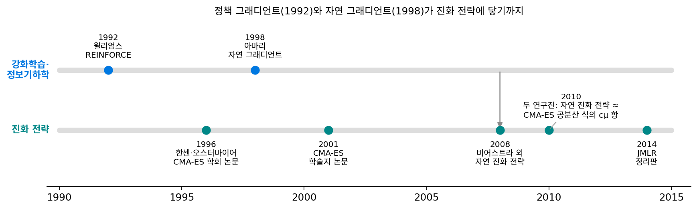
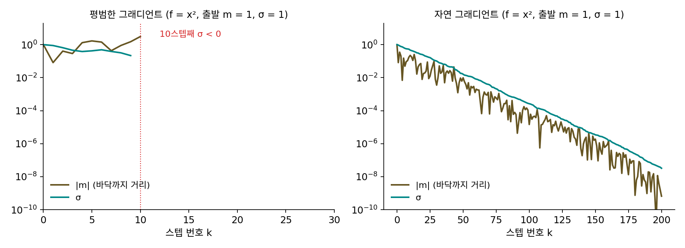
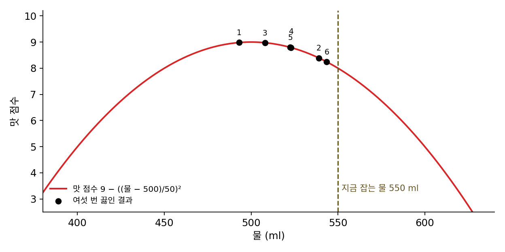
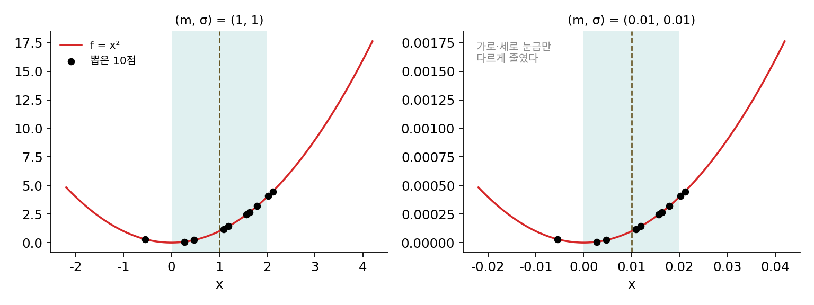
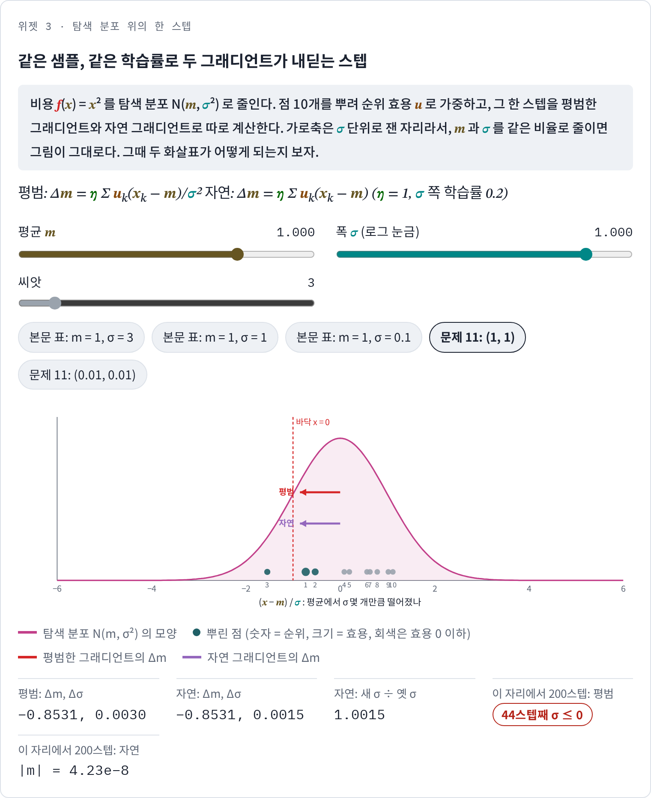
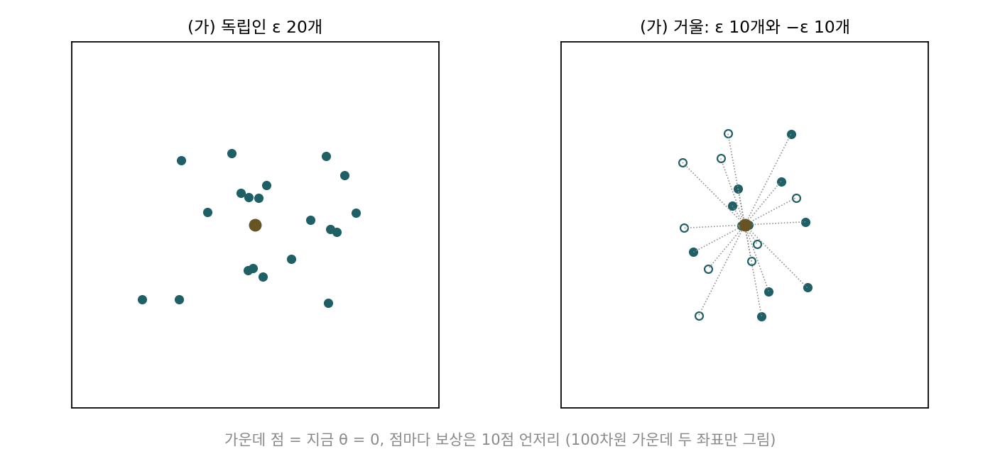

자연 진화 전략: 탐색 분포 위의 자연 그래디언트
CMA-ES는 잘 듣지만, 한 세대의 계산에 학습률이 여럿 들어 있었다. 2차원 기본 설정만 해도 걸어온 길을 얼마나 오래 기억할지 0.4462와 0.6246, σ를 얼마나 세게 고칠지 1.4462, 공분산을 얼마나 고칠지 0.1548과 0.0579가 들어 있다. 하나하나가 오랜 실험과 분석에서 나온 값이지만, 처음 보는 사람에게는 왜 하필 이런 규칙인지가 보이지 않는다. 한 걸음 물러서서 보면 이 장의 방법들은 모두 점을 뿌리는 분포를 하나 두고, 그 분포에서 뽑은 점들의 성적을 보고 분포를 고친다. 그렇다면 분포의 파라미터, 곧 평균과 폭을 「뽑은 점들의 평균 비용」을 줄이는 방향으로 그래디언트를 따라 고칠 수는 없을까? 비용 함수의 미분은 모르는데, 그 평균의 그래디언트는 구할 수 있을까?
역사: 탐색 그래디언트는 왜 늦게 나왔나
뽑은 점들의 평균 비용을 분포의 파라미터로 미분하는 꾀는 강화학습의 정책 그래디언트에서 이미 쓰이고 있었다. 1992년 로널드 윌리엄스(Ronald Williams)의 REINFORCE가 그 대표다. 그런데 같은 꾀를 진화 전략의 탐색 분포에 그대로 쓰면 잘 듣지 않았다. 다안 비어스트라(Daan Wierstra), 톰 샤울(Tom Schaul), 얀 페터스(Jan Peters), 위르겐 슈미트후버(Jürgen Schmidhuber)는 2008년 홍콩에서 열린 진화 계산 학회(CEC)에 「자연 진화 전략」을 냈다. 2014년에는 토비아스 글라스마허스(Tobias Glasmachers), 쑨이(Yi Sun)와 함께 『기계학습 연구 저널(JMLR)』에 정리판을 실었다. 그들은 정리판에서 평범한 탐색 그래디언트의 스텝이 분포의 폭 σ에 반비례한다는 것을 짚었다. 바닥을 정밀하게 찾으려면 σ가 줄어야 하는데, σ가 줄수록 스텝이 커져 불안정해지고, 학습률을 줄이거나 개체군을 키워도 그 순간을 늦출 뿐 피하지는 못한다. 그들은 탐색 그래디언트가 그전에 제대로 쓰이지 못한 것이 주로 이 때문일 것이라고 짐작했다. 그들의 처방은 아마리 슌이치(甘利俊一)가 1998년에 낸 자연 그래디언트였다. 그 뒤 글라스마허스와 동료들(2010), 그리고 아키모토 요헤이(Youhei Akimoto)와 동료들(2010)이 따로따로, 자연 진화 전략의 자연 그래디언트 업데이트가 CMA-ES의 공분산 업데이트 가운데 좋은 점들의 스텝을 모으는 부분(CMA-ES 공분산 업데이트 식의 cμ 항)과 거의 같은 꼴임을 알아챘다. 손으로 다듬어 온 규칙의 한 부분이 하나의 원리에서 나온 것이었다.


REINFORCE가 1992년에 있었으면, 같은 식을 탐색 분포에 쓰는 데 왜 16년이나 걸렸어요? 식은 그대로 가져다 쓰면 되잖아요.

가져다 쓰는 건 금방이었을 거예요. 문제는 쓰고 난 뒤였죠. 바닥에 가까워질수록 σ는 어떻게 되어야 하죠?

바닥을 정밀하게 찾으려면 줄어야죠. 그런데 스텝이 σ에 반비례하면… σ가 줄수록 스텝이 커지네요. 가까이 갈수록 더 멀리 튀어요.

그럼 학습률을 줄이면 되지 않아요?

비어스트라와 동료들도 그걸 짚었어요. 학습률을 줄이거나 개체군을 키워도 무너지는 순간을 늦출 뿐이라고요. σ는 계속 줄어드니까요.

처방인 자연 그래디언트는 1998년에 이미 나와 있었잖아요. 둘을 잇는 데도 10년이 걸린 거네요.

자연 그래디언트는 정보기하학의 말로 쓰여 있었고, 진화 전략은 실험으로 다듬은 규칙으로 굴러가고 있었어요. 자연 진화 전략의 업데이트가 CMA-ES 규칙의 한 부분과 같은 꼴이라는 것도 2010년에야 두 연구진이 따로 알아챘고요.

σ가 분모에 있어서 생긴 일이라면, 바닥이 0인 x² 한 줄 위에서 σ만 바꿔 가며 두 그래디언트를 나란히 돌려 보면 차이가 바로 보이지 않을까요?
한 줄 위에서 분포를 고치기
두 그래디언트의 차이를 숫자로 보려면 바닥을 아는 가장 단순한 경우, 1차원 비용 f(x) = x²(바닥 0)가 좋다. 점은 평균 m, 폭 σ인 정규분포 N(m, σ²)에서 한 번에 10개씩 뽑는다. 뽑은 점을 비용 순으로 줄 세워 1등부터 효용 0.3295, 0.1634, 0.0662, −0.0028, −0.0563을 주고 나머지 다섯에는 −0.1을 준다(비어스트라와 동료들이 쓴 기본값, 합은 0). 이 효용은 문제 1에서 본 둘씩 겨루기처럼 비용의 크기가 아니라 순위만 쓰고, 「효용 × 각 점이 평균에서 떨어진 거리」를 더한 값으로 m과 σ를 고친다. 이 합을 그대로 쓰는 것이 평범한 그래디언트고, 아래에서 정의할 자연 그래디언트는 거기에 분포의 폭에 맞춘 배율을 곱한다. 출발 m = 1, 같은 씨앗, 같은 학습률로 처음 σ만 바꿔 보자.
| 처음 σ | 평범한 그래디언트 | 자연 그래디언트 |
|---|---|---|
| 3 | 첫 스텝 Δm = −0.17. 200스텝 뒤 σ가 0 아래로 내려감, 바닥까지 거리 0.285 | 첫 스텝 Δm = −1.53. 200스텝 뒤 바닥까지 거리 3.6 × 10⁻¹⁰ |
| 1 | 첫 스텝 Δm = −1.08. 10스텝째에 σ = −0.69로 무너짐 | 첫 스텝 Δm = −1.08. 200스텝 뒤 바닥까지 거리 6.6 × 10⁻¹⁰ |
| 0.1 | 첫 스텝 Δm = −11.04로 m = −10.04. 첫 스텝에 σ = −1.00으로 무너짐 | 첫 스텝 Δm = −0.11. 200스텝 뒤 바닥까지 거리 6.4 × 10⁻¹¹ |
평범한 그래디언트는 σ가 크면 너무 굼뜨고, 작으면 한 스텝에 바닥에서 열 배 먼 곳으로 튀어 나간다. 처음 σ = 1에서 씨앗 스무 개로 돌리면 평범한 그래디언트는 열여섯 번이 200스텝 안에 σ ≤ 0으로 무너졌고, 자연 그래디언트는 스무 번 모두 |m| < 10⁻⁶에 닿았다. 자연 그래디언트의 σ는 50스텝마다 대략 0.0095~0.016배씩 고르게 줄어서, 1/5 규칙의 둥근 그릇에서 본 것처럼 남은 거리를 따라간다.
이제 이름과 식을 붙이자. 탐색 분포를 파라미터 θ(세타, 여기서는 θ = (m, σ))로 적은 분포 pθ라 하고, 그 분포에서 뽑은 점의 평균 비용을 J(θ)라 하자. J의 그래디언트는 f를 미분하지 않고도 적을 수 있다. 확률을 미분하는 대신 로그 확률을 미분하는 꾀(로그 미분 꾀)를 쓰면 미분이 기댓값 안으로 들어가고, 기댓값은 뽑은 점들의 평균으로 근사할 수 있다.
η(에타)는 학습률이다. 뽑은 점마다 ∇ log pθ를 계산해 보면 평균 쪽은 (x − m)/σ², 폭 쪽은 ((x − m)² − σ²)/σ³이다. 둘 다 σ가 분모에 있어서, σ가 작아질수록 평범한 그래디언트의 스텝이 커지는데, 표의 마지막 줄이 그 결과다. 피셔 행렬 F는 파라미터를 조금 바꿨을 때 분포가 얼마나 달라지는지를 재는 행렬이다. 폭이 좁은 분포는 평균을 조금만 옮겨도 전혀 다른 분포가 되므로 평균 쪽 값 1/σ²이 크다. 그 역을 곱하면 평균의 스텝은 Σ uk(xk − m)처럼 분포의 폭에 비례하게 되고, 폭의 스텝은 σ에 비례하는 곱셈이 된다. 스텝을 파라미터 공간의 거리가 아니라 「분포가 얼마나 달라졌나」로 잰 그래디언트가 자연 그래디언트다.
이렇게 탐색 분포의 파라미터를 뽑은 점들의 평균 비용이 줄어드는 방향으로, 피셔 행렬로 잰 자연 그래디언트를 따라 고치는 진화 전략을 자연 진화 전략 (분포를 자연 그래디언트로 고치기 / natural evolution strategies, NES)이라 한다. 그래디언트 식 가운데 f(x) ∇ log pθ(x) 꼴은 강화학습의 REINFORCE와 글자까지 같다. 거기서는 pθ가 행동을 고르는 정책이고 f가 보상이다.

ML에서: 강화학습 대신 진화 전략
2017년 오픈AI의 팀 살리만스(Tim Salimans), 조너선 호(Jonathan Ho), 시 천(Xi Chen), 시몬 시도르(Szymon Sidor), 일리야 수츠케버(Ilya Sutskever)는 논문 「강화학습의 확장 가능한 대안으로서의 진화 전략」에서 이 장의 방법을 신경망 정책의 가중치 θ 전체에 썼다. 가중치에 표준편차 σ인 노이즈를 더한 정책으로 게임을 한 판씩 끝까지 하고, 받은 보상 Ri로 (1/(nσ)) Σ Ri εi(n은 한 스텝에 뽑은 노이즈의 수)를 계산해 θ를 옮긴다. 이 그래디언트 추정값은 미분 없이 내려가기에서 본 가우시안 스무딩, 곧 함수를 정규분포로 흐리게 문지른 함수의 그래디언트를 추정하는 것과 같다고 그들도 적었다. 그들은 σ를 맞추는 데서 이득을 보지 못해 고정했다. σ가 고정이면 평균 쪽 자연 그래디언트는 평범한 그래디언트에 σ²라는 상수를 곱한 것이라, 학습률에 묻혀 둘의 차이가 사라진다. 그 대신 점과 그 반대쪽 점을 짝지어 재는 거울 뽑기, 보상을 순위로 바꾸는 효용(비어스트라와 동료들의 방법), 가중치 감쇠를 썼다.
진짜 새로운 것은 나눠 계산하는 방식이었다. 일꾼들이 무작위 씨앗을 미리 맞춰 두면 서로가 어떤 노이즈를 썼는지 다시 만들 수 있으므로, 한 판이 끝날 때마다 보상이라는 숫자 하나만 주고받으면 된다. 그래디언트 벡터 전체를 주고받는 정책 그래디언트 방법과 크게 다른 점이다. 그들은 3차원 사람 모양 로봇이 걷게 만드는 MuJoCo 태스크에서, 18코어 컴퓨터 한 대로 657분(약 11시간) 걸리던 학습을 80대의 1,440 CPU 코어로 나눠 10분으로 줄였다(일곱 번 돌린 중앙값). 아타리 게임 51개에서는 720 CPU로 게임마다 약 한 시간 학습해, 하루를 학습한 A3C의 발표된 결과와 비교해 23개 게임에서 낫고 28개에서 못했다고 보고했다.
문제 10. 라면 물 양 고치기
라면 물을 550 ml로 잡아 왔다. 물 양을 550 + 50ε ml로 바꿔 가며 여섯 번 끓여 맛 점수를 매겼다(ε는 표준정규 노이즈). 맛 점수는 설명을 위해 지은 식 9 − ((물 − 500)/50)²를 따른다고 하자.
번째 1 2 3 4 5 6 ε −1.14 −0.22 −0.84 −0.54 −0.55 −0.13 물(ml) 493.0 539.0 508.0 523.0 522.5 543.5 맛 점수 8.980 8.392 8.974 8.788 8.797 8.243 (가) Σ(점수 × ε)/(6 × 50)로 「물을 1 ml 늘릴 때 평균 점수가 바뀌는 양(평균 점수를 물 양으로 미분한 값)」을 추정하라. 참값 −2(550 − 500)/50² = −0.04와 비교하라. (나) 점수마다 50을 더해서 같은 계산을 하면? (다) 550 ml에서 뿌릴 때의 평균 점수 7을 점수마다 빼고 계산하면?

(가)부터 하면 Σ(점수 × ε)/300 = −0.10093이야. 참값 −0.04보다 두 배 넘게 커. 그래도 방향은 맞아. 물을 줄이라고 하잖아.
점수마다 50을 더하면 맛의 순서가 바뀌나요? 그럼 추정값은 어떻게 될까요?

순서는 그대로인데 계산하니 −0.67093이에요. 참값의 열여섯 배예요!
더한 50은 Σ(점수 × ε)에 어떤 항을 덧붙이죠?
50 × Σε요. 그러니까 점수마다 똑같이 더한 50이 50 × Σε/300 = 50 × (−3.42)/300만큼 끼어들어서 그래요. 이번 여섯 번은 ε가 우연히 다 음수였거든요.
그럼 평균 점수 7을 빼면 −0.02113이에요. 이번엔 참값보다 작아요. 어느 쪽이 맞는 건지 한 번으로는 모르겠어요.
한 번으로 판단하지 말고 같은 추정을 2만 번 되풀이해서 추정값의 평균과 표준편차를 재 봐요.

그대로는 평균 −0.04045에 표준편차 0.05089, 50을 더하면 평균 −0.04137에 표준편차 0.44817, 7을 빼면 평균 −0.04032에 표준편차 0.03516이에요. 셋 다 평균은 참값 −0.04 언저리예요. 표준편차만 달라요. 50을 더하면 표준편차가 아홉 배 가까이 커지고, 7을 빼면 30%쯤 작아져요.

ε의 평균이 0이니까 점수에 상수를 더하거나 빼도 추정값의 기댓값은 바뀌지 않고, 추정값의 분산만 바뀌는 거예요. 점수의 평균 언저리를 빼면 「평소보다 맛있었나」만 남아서 분산이 줄어요. 적분할 때 평균이 0인 함수를 곱하면 상수 항은 사라진다는 것과 같은 계산이에요.
문제 11. 크기만 줄인 같은 그림
f = x², 탐색 분포 N(m, σ²), 한 번에 10개를 뽑고 본문과 같은 순위 효용을 쓴다. 두 경우 (m, σ) = (1, 1)과 (0.01, 0.01)에 같은 표준정규 노이즈 ε 10개(씨앗 3)를 쓴다. 두 번째 경우는 첫 번째 그림을 100분의 1로 줄인 것이다. (가) 두 경우의 평범한 그래디언트 스텝 Δm(학습률 1)과 자연 그래디언트 스텝 Δm을 구하고, 각각 σ의 몇 배인지 비교하라. (나) 자연 그래디언트로 σ를 고친 뒤(σ 쪽 학습률 0.2) σnew/σ는 각각 얼마인가? 이 업데이트는 log σ에 무엇을 하는 것인가? (위젯 3의 「문제 11」 두 단추로 확인해 보자.)

그래디언트는 함수가 정하는 거니까 하나로 정해져 있잖아요. 평범한 그래디언트가 진짜 방향이고, 자연 그래디언트는 거기에 뭘 곱해서 고친 보조 장치 같아요.
그럼 계산해 봅시다. 두 경우에 뽑힌 점들은 σ 단위로 재면 똑같은 자리에 있죠. 평범한 그래디언트 스텝은 σ의 몇 배인가요?
(1, 1)에서 Δm = −0.8531이라 σ의 −0.8531배예요. (0.01, 0.01)에서는 Δm = −85.31, σ의 −8531배예요! 그림은 똑같은데 스텝이 만 배 커졌어요. 바닥이 0인데 −85로 날아가요.

같은 그림을 줄였을 뿐인데 「진짜 방향」이 만 배나 달라지면 이상하네요. 자연 그래디언트는 (1, 1)에서 −0.8531, (0.01, 0.01)에서 −0.008531이라 둘 다 σ의 −0.8531배예요. σnew/σ도 둘 다 1.0015로 같고요.
σnew/σ가 σ와 상관없이 같은 값이라는 것을 log σ로 옮겨 말하면요?

log σ가 σ와 상관없이 +0.0015만큼 더해지는 거예요. 그럼 σ를 더하기로 고치는 게 아니라 log σ를 더하기로, σ로 보면 곱하기로 고치는 거네요.
왜 하필 log σ일까요? 피셔 정보의 σ 쪽 칸이 2/σ²이었던 걸 떠올려 보세요.
2/σ²면 σ가 작을수록 커지는데… 변수를 log σ로 바꾸면 그 칸에 σ²이 곱해져서 2가 돼요. σ와 무관해지네요.
1/5 규칙도, 문제 6(학습률에 1.2를 곱할까)도 곱해서 고쳤잖아.
응, 우연이 아니었네. 미분방정식에서 변수 치환을 잘 하면 계수가 상수가 되는 것처럼, 자연 그래디언트는 처음부터 그 좋은 좌표로 걸어.
단위를 m에서 cm로 바꿨다고 알고리즘이 다르게 움직이면 안 되는 거군요. 평범한 그래디언트는 축척을 바꾸면 스텝이 달라지니까, 「진짜」가 아니라 「어느 좌표로 적었느냐」에 묶인 답이었어요.
위젯 3에서 문제 11의 (1, 1) 설정을 불러온 뒤 (0.01, 0.01) 단추도 눌러, 두 화면의 스텝이 σ의 몇 배인지 견줘 보세요.

문제 12. 거울 뽑기와 숫자 하나의 통신
파라미터가 d = 100차원인 정책의 보상을 R(θ) = 10 + a·θ − 0.05|θ|²로 흉내 낸다(a는 씨앗 5로 뽑은 길이 1 벡터). 늘 10점 언저리를 받는 게임이라고 생각하고, θ = 0에서 σ = 0.1로 보상을 20번 재서 그래디언트를 추정한다. (가) 독립인 ε 20개로 Σ Ri εi/(20σ)를 계산하는 방법과, ε 10개와 그 반대 −ε 10개를 짝지어 Σ (R(σε) − R(−σε)) ε/(20σ)로 계산하는 거울 뽑기를 2000번씩 되풀이했다. 참 그래디언트 a와의 거리 제곱 평균은 독립 49,480.6, 거울 10.087이었다. 왜 이렇게 차이가 나는가? (나) 파라미터가 100만 개인 정책을 일꾼 1,440명이 함께 학습한다. 한 스텝마다 그래디언트 벡터(float32)를 주고받는 경우와 보상 숫자 하나만 주고받는 경우, 한 일꾼이 받는 양을 비교하라.

(가)는 거리 제곱이 4905배나 차이 나요. 참 그래디언트와의 코사인도 독립은 0.0008이라 거의 아무 방향이고, 거울은 0.2960이에요. 거울은 서로 다른 방향이 10개뿐인데도요.
보상의 10점이 추정값에 어떻게 들어가는지 보세요. 독립으로 뽑으면 10이라는 숫자에 무엇이 곱해지죠?
10 × ε/σ = 100ε가 샘플마다 붙어요. ε 스무 개의 평균이 0이 아니면 그대로 추정값에 남고, 100차원 각 칸에 그만큼의 오차가 생겨요.
이거 문제 10(라면 물 양)에서 점수마다 50을 더했을 때랑 같은 거잖아.
그럼 거울로 짝지으면 그 10은 어떻게 되죠?
짝끼리 빼니까… R(σε) − R(−σε)에서 10도, |θ|² 항도 빠지고 2σ a·ε만 남아요.
그럼 기준값 10을 미리 알았다면 독립 뽑기도 괜찮았겠죠. 거울 뽑기는 그 기준값을 몰라도 짝끼리 알아서 빼 줘요. 오픈AI 팀이 보상을 순위 효용으로 바꾼 것도 같은 쪽을 거들어요. (나)는요?
그래디언트를 보내면 100만 × 4바이트 = 4 MB이고, 1,440명한테 받으면 5,760 MB, 5.76 GB예요. 보상만 보내면 1,440 × 4 = 5,760바이트예요. 백만 배 차이예요. 씨앗만 맞춰 두면 남이 쓴 노이즈는 내가 다시 만들 수 있으니까요.
결국 이 방법이 몇 분 만에 끝난 건 그래디언트를 얼마나 잘 추정했느냐보다, 일꾼 1,440명이 숫자 하나씩만 주고받아도 되는 구조 덕분이었네요. 대신 차원이 크면 추정값이 많이 흔들리니까 일꾼이 그만큼 많이 필요하고요.